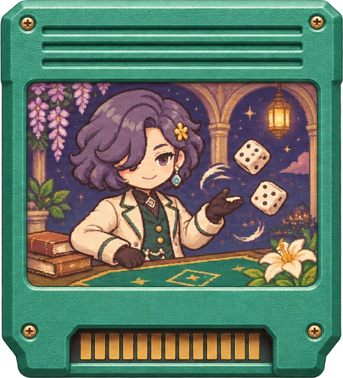
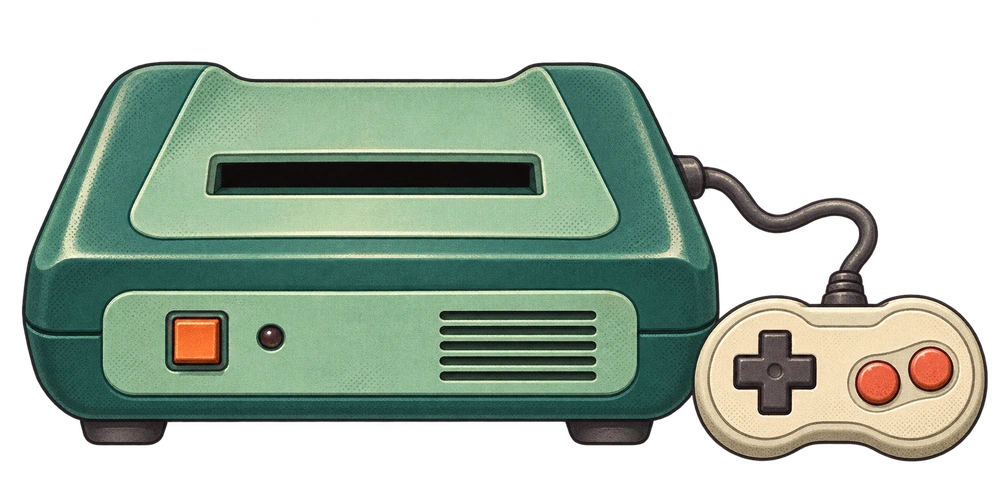

팩을 고르면 플레이 영상과 구현 기록을 볼 수 있습니다.


정이안 / 게임 기획 · 개발 · 플레이 검수
Unity와 C#으로 개발 중인 정원 게임입니다. 정원을 비운 동안 소리가 거둔 작물도 저장해, 돌아오면 이어서 수확할 수 있습니다.
2~4명이 주사위를 굴려 점수표를 채우는 온라인 보드게임입니다. 서버가 차례와 점수를 관리하고, 브라우저는 WebSocket으로 받은 결과를 화면에 반영합니다.
Matter.js로 고양이가 떨어지고 쌓이는 퍼즐을 만들었습니다. 같은 단계의 두 고양이는 그림의 가장자리가 닿는 경우까지 검사해 합칩니다.